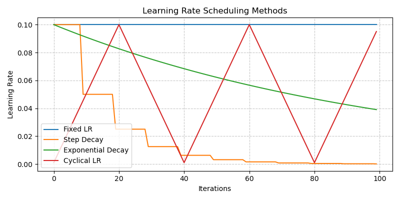
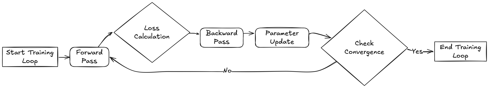

6 The Building Blocks of Neural Networks and Deep Learning
Overview
Welcome to your first step into the exciting world of deep learning! This lesson will guide you through the fundamentals in a simple and friendly way. Think of this as the start of your journey into a fascinating area of artificial intelligence.
In this session, we’ll explore:
- Data and Models: Understand why data is crucial and how models act like ‘brains’ to interpret information.
- Loss Functions and Optimization Algorithms: Discover how computers learn from their mistakes using these tools to improve over time.
By the end of this lesson, you’ll grasp these key concepts. These building blocks will help you understand how AI works and how you can apply these powerful tools.
6.1 Introduction
Think of deep learning as a powerful tool, much like a car helps you reach a destination. Just as you don’t need to know every mechanical detail to drive, you can start with deep learning by understanding its essential components.
6.1.1 What does this tool (deep learning) do?
At its core, deep learning is about:
Finding a function automatically that maps given inputs to desired outputs 1.
In simpler terms, deep learning enables computers to learn patterns from data to make predictions or decisions, without needing explicit step-by-step rules. It’s like teaching a child to recognize dogs by showing them many pictures, rather than giving a long list of rules defining a dog.
Here are a few examples:
| Inputs | Outputs | Functions |
|---|---|---|
| A sentence or prompt | Text completion | LLM (e.g., ChatGPT 2) |
| A caption/description | An image | DALL-E 3 |
| Historical weather data | Weather forecasting | GraphCast 4 |
- Can you think of a real-world problem you’d like to solve using deep learning?
- What kind of data would you need (inputs)?
- What results would you want the system to produce (outputs)?
6.1.2 Key questions and building blocks of deep learning
To find the right function using deep learning, we break the process down into four key questions, which correspond to the fundamental building blocks:
- What are the inputs and outputs? This relates to the Data we use.
- What kind of functions could we use? This involves choosing Models (the set of possible functions).
- How do we know if a function is good or bad? This is where Loss Functions come in to evaluate performance.
- How do we find the best function from our chosen set? This is achieved through Optimization Algorithms.
These four elements form the core of deep learning. Two related concepts, Training (the process of finding the best function) and Inference (using the trained function), tie these blocks together for practical use.
Remember, these building blocks are interconnected. Choices made for one block often affect the others, involving trade-offs.
Let’s begin exploring these building blocks.
6.2 Data
Data is the starting point of deep learning. It defines the inputs and outputs of the function we aim to learn.
For specific examples related to Arctic research data, please refer to the AI-ready Data section.
6.2.1 Inputs
Building any deep learning application starts with defining and preparing your input data. Data is the foundation upon which models learn patterns.
Before you start, consider:
- Data Type: What kind of data is it (images, text, audio, numerical measurements)?
- Data Volume & Representativeness: How much data do you have? Does it accurately reflect the real-world scenarios your model will encounter?
- Task Requirements: Are there specific needs like granularity (level of detail), temporal consistency (order matters), or spatial coverage?
- Data Quality: Is the data clean? Look out for missing values, outliers (unusual data points), or noise
- How well do you understand the origin and quality of your data?
- Even well-known datasets like ImageNet can have labeling issues or biases. Always critically examine your data source 5.
Key steps for preparing input data:
1. Data Collection
2. Data Preparation
- Handle missing or outlier data points appropriately (e.g., fill them in using statistical methods or with your domain knowledge about the data) 8 9.
- Standardize or normalize numerical data. This puts features on a similar scale, which prevents some features from dominating the learning process and often helps models train faster 10.
3. Splitting Data
Divide your data into distinct sets:
- Training Set: Used to teach the model.
- Validation Set: Used to tune model settings (hyperparameters) and check performance during training.
- Testing Set: Used for a final, unbiased evaluation of the model’s performance after training.
Ensure each set represents the overall data distribution. Avoid “data leakage” where information from the validation or test set accidentally influences the training process.
Consider the nature of your data when splitting 11:
- Imbalanced Data: If some categories are rare, use stratified sampling to maintain the correct proportion of categories in each split 12.
- Temporal Data (Time Series): Split based on time (e.g., train on past data, test on future data). Random shuffling usually isn’t appropriate here.
- Spatial Data: Split based on geographic areas to avoid testing on areas very close to training data 13.
What could go wrong if information from the test set ‘leaks’ into the training process?
Hint: Over-optimistic performance estimate, model won’t generalize well.
4. Data Augmentation (Optional but often helpful)
- Artificially increase the size and diversity of your training data by applying relevant transformations.
- Examples: For images, you might rotate, flip, or change brightness. For text, you might replace words with synonyms 14.
- Use transformations that make sense for your data type and problem. Don’t create unrealistic data.
- Be mindful not to introduce transformations that fundamentally change the meaning or label of the data 15.
An interesting paper on data augmentation showing simple copy-paste can be a strong augmentation technique even if the output is not realistic 16.
Think about recognizing street signs in images. What’s one type of image augmentation that might be helpful? What’s one that might actually be harmful?
- Helpful: slight rotation, brightness change.
- Harmful: flipping horizontally might change meaning, extreme color shifts.
6.2.2 Outputs
Defining the desired outputs is as critical as preparing the inputs. The output format dictates what the model predicts and must align with your project goals.
Consider:
Output Type: What kind of prediction do you need?
- Classification: Assigning inputs to predefined categories (e.g., “dog” vs. “cat”, “spam” vs. “not spam”).
- Regression: Predicting a continuous numerical value (e.g., sea ice concentration percentage, temperature).
- Structured Output: Predicting complex outputs like bounding boxes around objects in an image, or generating a sequence of text.
Output Format: How should the prediction be represented? (e.g., a probability distribution over classes, a single number, coordinates).
Output Constraints: Are there specific requirements, like values needing to be within a certain range (e.g., probability between 0 and 1)?
Key steps for preparing output data:
1. Identify Output Type
- Choose the type that matches your problem: classification, regression, etc..
2. Format Outputs
- Select a format compatible with your chosen model and loss function.
- One-hot encoding 17 is common for classification tasks with multiple categories. (e.g., [0, 1, 0] for the second category out of three).
- Normalize continuous outputs (regression) if necessary, similar to input normalization.
- For complex structured outputs, reparameterizing the output format can make the model’s job easier. In other words: “Don’t just predict what you want — predict something easier that leads to what you want.”
Here’s an example of label encoding and one-hot encoding for a classification problem with three categories:
| Fruit Name | Label Encoding | One-hot Encoding |
|---|---|---|
| Apple | 0 | [1, 0, 0] |
| Banana | 1 | [0, 1, 0] |
| Orange | 2 | [0, 0, 1] |
- Label encoding: Assigns a single number to each category, like 0, 1, 2.
- One-hot encoding: Uses a binary vector to represent each category, like [1, 0, 0], [0, 1, 0], [0, 0, 1].
In the following two cases, which encoding might be more appropriate?
- Fruit categories: Apple, Banana, Orange.
- Severity of a storm: Light, Moderate, Severe.
Hint: Think about whether the categories have a natural order. For example, does Apple need to come before Banana in the encoding?
3. Data Labeling
- Assign the correct “ground truth” output (label) to each input data point in your training and evaluation sets. This provides the reference the model learns from.
- Refer to the Data Annotation section for detailed labeling techniques.
Balance the desired detail of your outputs with model complexity, data availability, and computational resources. For instance, predicting exact sea ice percentage (0-100%) is harder than predicting broad categories like “low” (<15%) vs. “high” (>85%).
6.2.3 Quantity and quality
Quantity
- Does more data always lead to better results? Not necessarily in isolation.
- Interestingly, research shows that just having more data isn’t the full story. How much data you need is related to the size of your model and the computing power you have. This plot illustrates that for a fixed amount of computing power (FLOPs), there’s an optimal combination of model size and data amount to get the best results. 18.
For various model sizes, we choose the number of training tokens such that the final FLOPs is a constant. The cosine cycle length is set to match the target FLOP count. We find a clear valley in loss, meaning that for a given FLOP budget there is an optimal model to train
Quality
Data quality is often more critical than sheer quantity. High-quality, relevant data is essential for reliable models.
Common quality issues include:
- Incorrect or inconsistent labels.
- Noise or irrelevant information within the data.
- Poorly filtered datasets containing duplicates or near-duplicates.
Research emphasizes that improving dataset quality through careful filtering and cleaning significantly boosts model performance.
- Rae et al. (2021) 19.
Our data pipeline (Section A.1.1) includes text quality filtering, removal of repetitious text, deduplication of similar documents, and removal of documents with significant test-set overlap. We find that successive stages of this pipeline improve language model downstream performance (Section A.3.2), emphasising the importance of dataset quality.
- Hoffmann et al., (2022) 20.
Nonetheless, large language models face several challenges, including their overwhelming computational requirements (the cost of training and inference increase with model size) (Rae et al., 2021; Thoppilan et al., 2022) and the need for acquiring more high-quality training data. In fact, in this work we find that larger, high quality datasets will play a key role in any further scaling of language models.
If your model performs poorly, what should you investigate first: trying a bigger model, or carefully check the quality and relevance of your training data?
Hint: Data quality issues are often a primary culprit.
6.3 Models
Models in deep learning represent the set of possible functions that can map inputs to outputs. Think of a model architecture as defining a family of functions; training then selects the specific function (by finding the right parameters) from that family that best fits the data.
6.3.1 Layers: The Building Blocks of Models
Deep learning models are constructed by stacking layers. Each layer performs a specific transformation on the data it receives before passing it to the next layer.
Don’t feel overwhelmed by the variety of layers initially. Focus on understanding their general purpose and how they fit into complete models. You can delve deeper into specific layer mechanics later.
Here are some common layer types:
1. Fully-Connected (Dense) Layer

What it does: Connects every input neuron to every output neuron. Each connection has a learnable weight. It calculates outputs by taking a weighted sum of all inputs 21.
Think of it as: A system where every input feature can potentially influence every output value.
Uses: Often used in the final stages of classification models to make predictions based on learned features, or to adjust the dimensionality (size) of the data representation.
Pros: Can learn complex combinations of features. Simple concept.
Cons: Many parameters (computationally expensive, prone to overfitting). Doesn’t inherently understand spatial or sequential structures in data (e.g., pixel neighborhoods in images).
Fully-connected layers are sometimes criticized for not understanding ‘spatial structure’ in images. Why is that?
Hint: Fully-connected layers treat a 2D image as a flat vector, ignoring pixel neighborhoods.
2. Convolutional Layer (Conv Layer)

What it does: Applies learnable filters (kernels) across the input data (often images). Each filter detects specific local patterns (like edges, corners, textures) 22.
How it works: Small filters (also called kernels) slide across the input data. At each position, it computes a weighted sum of the input values in the filter’s receptive field. Stride controls the step size of the filter, and padding adds values (usually zeros) around the border to control output size.
Output size = (Input size + 2 × Padding - Kernel size) / Stride + 1.Think of it as: Using a small magnifying glass that slides over an image, looking for specific visual features.
Uses: Feature extraction in image processing, video analysis, and sometimes other data types where local patterns are important.
Pros: Parameter sharing (filters are reused, reducing parameters compared to fully-connected layers). Captures spatial hierarchies (early layers find simple features, later layers combine them). Translation invariance (can detect a pattern regardless of its position).
Cons: Primarily focused on local patterns; may need other mechanisms to capture long-range dependencies. Choosing filter size, stride, and padding requires careful design.
What is the main benefit of ‘parameter sharing’ in convolutional layers compared to fully-connected layers when processing images?
Hint: Fewer weights to learn, detects patterns anywhere in the image.
3. Pooling Layer


Source: Computersciencewiki
What it does: Reduces the spatial dimensions (height/width) of the input, summarizing information within local regions.
How it works: Divides the input into regions. For each region, it outputs a single summary value – typically the maximum (Max Pooling) or the average (Average Pooling) of the values in that region. Global Pooling summarizes across the entire feature map 23.
Think of it as: Downsizing an image while trying to keep the most salient information from each small block.
Uses: Reduces computational load and memory usage. Increases robustness to small spatial variations in the input. Helps focus on the most prominent features.
Pros: Reduces dimensions significantly. Provides some invariance to minor translations. Computationally efficient.
Cons: Discards information (potentially important details).
What information is potentially lost when using Max Pooling? Why might we still use it?
Hint: Loses details/exact locations within the region; Gains computational efficiency and some robustness to feature location.
4. Activation Layer (Non-linearity)

What it does: Introduces non-linearity into the model. Without it, stacking linear layers (like Conv or Fully-Connected) would just result in another linear function. Non-linearity allows models to learn complex patterns.
How it works: Applies a fixed mathematical function element-wise to the output of the previous layer. Common activation functions include:
- ReLU: \(f(x) = \max(0, x)\)
- Sigmoid: \(f(x) = \frac{1}{1 + e^{-x}}\)
- Tanh: \(f(x) = \frac{e^{2x} - 1}{e^{2x} + 1}\)
Think of it as: A gate or switch that modifies the signal passing through, allowing the network to make more complex “decisions”. ReLU, for example, simply outputs the input if it’s positive, and zero otherwise \(\max(0,x)\).
Uses: Applied after most convolutional and fully-connected layers to enable learning of complex mappings.
Pros: Essential for learning non-trivial functions. Different activations have properties suited for different tasks or network parts (e.g., Sigmoid outputs values between 0 and 1, useful for probabilities) 24.
Cons: Poor choices can lead to training difficulties like the “vanishing gradient problem” where gradients become too small for effective learning 25.
If a network only used linear activation functions (or no activations), what kind of relationship could it learn between inputs and outputs, no matter how many layers it had?
Hint: only linear relationships.
5. Recurrent Layer (e.g., LSTM, GRU)

What it does: Processes sequential data (like text, time series, speech) by maintaining an internal “memory” or state that captures information from previous steps in the sequence.
How it works: At each step in the sequence, the layer takes the current input and the hidden state from the previous step. It uses these to compute the output for the current step and update its hidden state for the next step. Variants like LSTM (Long Short-Term Memory) 26 and GRU (Gated Recurrent Unit) 27 use gating mechanisms to control what information is remembered, forgotten, or passed on, helping them learn long-range dependencies.
Think of it as: Reading a sentence word by word, keeping the context from earlier words in mind to understand the current word.
Uses: Natural Language Processing (NLP), speech recognition, time series forecasting.
Pros: Explicitly designed to handle sequential dependencies. Can process sequences of varying lengths. LSTMs/GRUs mitigate the vanishing gradient problem common in simpler RNNs.
Cons: Processing is inherently sequential, making parallelization harder and training potentially slower than feed-forward networks. Can still struggle with extremely long dependencies despite improvements 28.
What is the main benefit of using an LSTM over a basic RNN?
Hint: Better handling of long-term dependencies / avoiding the vanishing gradient problem.
6. Attention Layer

What it does: Allows the model to dynamically focus on the most relevant parts of the input sequence when producing an output at a particular step. Instead of relying solely on the final hidden state (like in basic RNNs), it can “look back” at different parts of the input.
How it works: Calculates “attention scores” indicating the relevance of each input element (e.g., each word in a source sentence for translation) to the current output element (e.g., the word being translated). It then computes a weighted sum of the input representations based on these scores, effectively highlighting the important parts 29.
Think of it as: When translating a sentence, focusing your attention on specific source words relevant to the target word you are about to write.
Uses: Machine translation, text summarization, question answering, image captioning. Core component of Transformer models.
Pros: Significantly improves performance on tasks requiring alignment between input and output sequences. Can handle long-range dependencies effectively. Provides interpretability by showing where the model “attends”.
Cons: Can be computationally intensive, especially self-attention (where elements within the same sequence attend to each other), which scales quadratically with sequence length.
In the context of translating a long sentence, how does attention help the model generate a more accurate translation compared to a model without attention, e.g., LSTM?
Hint: Allows focusing on relevant source words for each target word being generated. This is more accurate than using the last hidden state of the LSTM, especially for long sentences.
6.3.2 Common Model Architectures
Layers are assembled into architectures. Different architectures excel at different types of data and tasks because they embody different assumptions about the data (inductive biases). Often, models serve primarily as powerful feature extractors. Once meaningful features are extracted, they can be fed into simpler “head” layers for specific tasks (like classification or regression).
This modularity allows flexibility:
- One Model, Many Tasks: The same base feature extractor (e.g., a CNN) can be used for image classification, object detection, or segmentation by swapping out the final layers.
- Many Models, One Task: Different architectures (CNN, Transformer) might be applied to the same task (e.g., image classification), each leveraging different strengths.
See Model customization for more details on how to customize models for different data and tasks.
Why different models? Data and tasks vary fundamentally:
- CNNs: Great for grid-like data (images) due to spatial pattern recognition.
- LSTMs/RNNs: Suited for sequential data, capturing temporal dependencies.
- Transformers: Excel at modeling relationships between elements in a sequence using attention, regardless of distance.
- GNNs: Designed for graph-structured data, modeling relationships between connected entities.
Choosing the right architecture matches the structure of your data and task.
Here’s a look at some prominent model architectures:
1. Convolutional Neural Networks (CNNs)

Best for: Grid-like data, especially images.
Core idea: Uses convolutional layers to automatically learn hierarchies of spatial features (edges -> textures -> parts -> objects).
Architecture: A typical CNN architecture combines several types of layers:
- Convolutional layers: Extract features like edges, textures, and shapes.
- Activation layers: Add non-linearity to learn complex patterns.
- Pooling layers: Reduce data dimensions while keeping important information.
- Batch normalization layers 30: Stabilize and accelerate training.
- Dropout layers 31: Prevent overfitting by randomly dropping some neurons.
- Fully-connected layers: Combine extracted features for predictions.
Strengths:
- Parameter efficiency: Instead of learning a separate weight for each pixel (as in a fully-connected layer), CNNs use small filters that slide across the image, sharing weights.
- Translation invariance: Since the same filter is applied everywhere, CNNs can recognize patterns regardless of their location in the image.
- Hierarchical learning 32: CNNs build understanding from simple to complex. Early layers detect edges, corners, and textures. Middle layers combine these into shapes and textures, and deep layers assemble these into recognizable objects or concepts.

Hierarchical features in CNNs. Source: CMU 10-708 Probabilistic Graphical Models
Examples:
- LeNet 33: Early successful CNN for handwritten digit recognition.
- AlexNet 34: Breakthrough performance on ImageNet (2012).
- VGG 35: Simple and deep architecture.
- ResNet 36: Introduced residual connections to enable very deep networks.
- Inception/GoogLeNet 37: Used parallel convolutions of different sizes to capture multi-scale features.
- EfficientNet 38: Scaled depth/width/resolution systematically.
Applications:
What are the two main advantages of using convolutional layers over fully-connected layers for image classification?
Hint: Parameter sharing/efficiency and translation invariance.
2. Long Short-Term Memory Networks (LSTMs) 42

Best for: Sequential data (text, time series, speech).
Core idea: A type of RNN specifically designed with internal “gates” (forget, input, output) to control information flow, allowing it to remember relevant information over long sequences and forget irrelevant details. Addresses the vanishing gradient problem of simple RNNs.
Architecture: See Visualization of a LSTM cell for the introduction of a LSTM cell and its operation.
Strengths:
- Long-term memory: Can remember information for extended sequences, solving the vanishing gradient problem plaguing simple RNNs 43.
- Selective memory management: Can learn which information to remember and which to forget.
- Flexible sequence handling: Can process inputs of variable length and maintain contextual understanding.
- Gradient stability: Special architecture prevents gradients from vanishing or exploding during backpropagation 44.
Variants:
- Vanilla LSTM 45: The original architecture introduced by Hochreiter & Schmidhuber.
- GRU (Gated Recurrent Unit) 46: Simplified version with fewer parameters that merges cell and hidden states.
- Bidirectional LSTM 47: Processes sequences in both forward and backward directions, i.e., using both past and future context.
- ConvLSTM 48: Combines convolutional operations with LSTM for spatiotemporal data, e.g., video classification.
Applications:
- Natural language processing 49: Machine translation, text generation, and sentiment analysis.
- Time series prediction 50: Stock market forecasting, weather prediction, and energy consumption.
- Speech recognition 51: Converting spoken language to text with contextual understanding.
- Music generation 52: Creating original musical compositions with temporal coherence.
- Anomaly detection 53: Identifying unusual patterns in sequential data like network traffic.
What is the high-level purpose of the ‘gates’ in an LSTM cell?
Hint: To control the flow of information - deciding what information to remember, forget, and output.
3. Transformers

Best for: Sequential data (dominant in modern NLP: text translation, generation, understanding), but increasingly adapted for images (Vision Transformers) and other data types.
Core idea: Revolutionized sequence modeling by relying almost entirely on self-attention mechanisms instead of recurrence (like LSTMs). This allows the model to weigh the importance of all other elements in the sequence when processing a given element, capturing context effectively regardless of distance. This design is highly parallelizable (faster training!) but requires positional encodings to retain sequence order information since it doesn’t process word-by-word.
Architecture: The foundational “Attention Is All You Need” paper 54 introduced an Encoder-Decoder structure:
- Encoder: Processes the input sequence (e.g., source language sentence) and builds rich, context-aware representations.
- Decoder: Generates the output sequence (e.g., target language sentence) based on the encoder’s representations and the output generated so far.
Both Encoder and Decoder are typically stacks of identical layers, each containing key sub-components:
Self-Attention Layers (often Multi-Head): The core mechanism! Allows each position to ‘attend’ to all other positions (within the encoder, or previous positions in the decoder) to understand context. Multi-head attention allows attending to different types of information simultaneously. (See the Attention Layer section for more details/visualizations).
Position-wise Feed-Forward Networks: Process information independently at each position in the sequence.
Residual Connections & Layer Normalization 55: These are crucial techniques applied around the sub-layers to help gradients flow during training and stabilize the learning process, enabling deeper networks.
Positional Encodings 56: Added to the input to give the model information about the position of each element in the sequence.
- Strengths:
- Parallelization: Unlike sequential RNNs, attention calculations can be performed largely in parallel across the sequence, enabling much faster training on modern hardware (GPUs/TPUs).
- Long-Range Dependencies 57: Self-attention directly connects all positions, making it easier to capture relationships between distant elements in a sequence compared to RNNs/LSTMs.
- Context-Aware Representations: Each element’s final representation is influenced by its entire context, leading to deeper understanding.
- Scalability 58: Performance generally improves predictably with more data and larger model sizes, following established “scaling laws.”
Popular Transformer architectures: (Many models build on the original Transformer ideas)
- BERT 59: Encoder-only model, highly effective for language understanding tasks (classification, question answering) via pre-training.
- GPT (Generative Pre-trained Transformer) 60 61: Decoder-only model, powerful for text generation tasks, known for scaling to very large sizes.
- ViT (Vision Transformer) 62: Adapted the Transformer for computer vision by treating image patches like sequence tokens.
- BART 63: Full Encoder-Decoder model often used for sequence-to-sequence tasks like summarization.
- Swin Transformer 64: A hierarchical Vision Transformer using shifted windows for efficiency.
Applications: Virtually all modern NLP tasks (translation, summarization, Q&A), increasingly used in computer vision, biology, and other domains.
- Natural language processing 65: Machine translation, text summarization, question answering, and text generation, outperforming LSTM-based approaches.
- Computer vision 66: Image classification, object detection, segmentation, and image generation, increasingly surpassing CNN performance.
- Speech recognition 67: End-to-end speech-to-text.
- Multimodal learning 68: Models combining text, images, and/or audio (e.g., image captioning, text-to-image generation).
- Computational biology 69: Protein structure prediction (AlphaFold2), genomic sequence analysis.
Transformers have largely surpassed LSTMs for state-of-the-art performance in NLP and are becoming competitive alternatives to CNNs in vision, especially when large datasets are available. The original “Attention Is All You Need” paper 70 is a highly recommended read for understanding the foundation. Research on scaling laws 71 suggests performance will likely continue to improve with increased model size and data, though this requires significant computational resources.
- Why are ‘Positional Encodings’ necessary in Transformers?
Hint: Self-attention itself doesn’t know the order/position of elements; these encodings add that information.
- What advantage does self-attention provide for understanding long sentences compared to the hidden state passed along in an LSTM?
Hint: Allows direct connections/comparisons between any two words, regardless of distance.
4. Autoencoders

Best for: Unsupervised learning tasks like dimensionality reduction, feature learning, data denoising, and generative modeling. Unlike models needing explicit labels, autoencoders learn directly from the input data itself.
Core idea: An unsupervised network trained to reconstruct its input. It consists of an Encoder that compresses the input into a lower-dimensional latent space (the bottleneck), and a Decoder that tries to reconstruct the original input from this compressed representation. The bottleneck forces the network to learn the most important, efficient features of the data.
Architecture: A typical autoencoder consists of three main components:
- Encoder: Compresses/encodes the input data into a compact representation.
- Bottleneck/Latent space: The compressed, lower-dimensional representation of the input data.
- Decoder: Reconstructs/decodes the original input data from the bottleneck representation.
Variants: (Building on the basic idea)
- Vanilla autoencoders 72: The basic architecture described above.
- Sparse autoencoders 73: Encourage sparsity in the bottleneck for potentially more robust features.
- Denoising autoencoders 74: Trained specifically to reconstruct clean inputs from intentionally corrupted versions, making them good for noise removal and learning robust features.
- Variational autoencoders (VAEs) 75: A generative variant that learns a probability distribution in the latent space, allowing you to generate new data samples similar to the training data.
- Convolutional autoencoders 76: Use convolutional layers in the encoder/decoder, suitable for image data.
- Adversarial autoencoders 77: Combine autoencoders with ideas from Generative Adversarial Networks (GANs).
Applications:
- Anomaly detection 78: Identify unusual data points – they typically have high reconstruction error when passed through an AE trained on normal data.
- Image denoising and restoration 79: Clean up noisy or corrupted images (especially Denoising AEs).
- Dimensionality reduction 80: Compress high-dimensional data to a lower dimension while preserving important structure (similar to PCA, but non-linear).
- Feature learning 81: The encoder part can be used to extract meaningful features for downstream supervised tasks.
- Recommender systems 82: Learn latent representations (embeddings) of users and items.
How does the training goal of an autoencoder differ from the supervised classification models (like CNNs) we saw earlier?
Hint: Autoencoders are unsupervised, meaning they don’t need labeled data. They learn to compress data into a lower-dimensional representation, then reconstruct it from that compressed representation.
Choosing the Right Architecture
As highlighted, different models can often tackle the same application (e.g., CNNs and Vision Transformers for image classification). The choice depends on factors like:
- Your Data: Is it grid-like (images), sequential (text/time), graph-structured, or something else?
- Your Task: Are you classifying, regressing, generating, clustering?
- Available Resources: How much data and computing power do you have? Some models are more data-hungry or computationally expensive than others.
- Performance Needs: Do you need state-of-the-art accuracy, or is speed/efficiency more critical?
Understanding the core strengths and inductive biases of each architecture helps in selecting the most appropriate starting point for your problem.
Based on the architectures discussed (CNNs, LSTMs, Transformers, Autoencoders):
- If you wanted to classify sentiment (positive/negative) based on customer reviews (text data), which 1-2 architectures seem most appropriate to start with? Why?
- If you wanted to predict tomorrow’s temperature based on historical weather data (time series), which architecture(s) might you consider?
- If you wanted to detect fraudulent transactions in a network of users and payments, which architecture fits best?
Although there are many types of deep learning models, some research reveals interesting relationships between them, demonstrating that many models can be viewed as special cases of others. Here are some examples for you to explore:
6.3.3 Pre-trained models and transfer learning
In deep learning, creating models from scratch requires lots of time and computing power, e.g., collecting and labeling a large dataset, designing good network architectures, and training for days, weeks, or months on powerful GPUs. So, how can we, as learners or small teams leverage the power of deep learning without needing Google-level resources?
Pre-trained models and transfer learning offer a simpler approach. Instead of starting from zero, researchers can use models that have already been constructed and learned from massive datasets. This lets them build effective systems faster and with less data, like standing on the shoulders of giants rather than climbing the mountain alone.
Pre-trained models
A pre-trained model is a neural network that has already been trained on a large benchmark dataset to solve a specific task (usually a general one). They have learned valuable features and can be used as-is for their original task or as a starting point for other tasks.
Example:
Transfer learning
Transfer Learning is the technique of taking a pre-trained model (which learned on Task A / Dataset A) and adapting it for your own, usually different but related, Task B / Dataset B. The machine exploits the knowledge gained from the pre-training stage to improve its performance on the new task.

Common approaches:
- Feature Extraction: Use the pre-trained model (mostly frozen, i.e., weights not updated) as a fixed feature extractor. You typically replace or add only the final layer(s) (“head”) to suit your specific task and train only those new layers on your data. Good for smaller datasets or tasks very similar to the original. Faster training.
- Fine-tuning: Start with the pre-trained model’s weights, but allow some or all of them (usually the later layers) to be updated during training on your new dataset, typically using a low learning rate. This adapts the learned features more specifically to your task. Better for larger datasets where you have enough data to tune without overfitting. Can lead to better performance but requires more careful training.
- Prompt Engineering: (Mainly for large language models) Guide the pre-trained model’s behavior by carefully designing the input text (prompt), often without changing the model’s weights at all.
Benefits of using pre-trained models and transfer learning
- Less data needed: You can often get good results with much smaller datasets for your specific task because the model already has a head start.
- Faster development & training: Training takes less time because you’re training fewer parameters (feature extraction) or only tuning existing ones for a shorter period (fine-tuning).
- Better performance: Often achieves higher accuracy than training a model from scratch, especially with limited data, because the pre-trained features provide a better starting point.
- Accessibility: Makes powerful deep learning accessible even without massive computational resources or huge datasets. Democratizes AI!
General guidelines for using pre-trained models and transfer learning
The pre-trained model’s task should be similar to your task (e.g., ImageNet models for classifying different types of flowers, medical images, or satellite images; BERT for sentiment analysis or question answering; etc.)
You have limited data for your task
You have limited computational resources
Be cautious when:
- Your task is very different from the pre-trained model’s task (e.g., using an ImageNet model for audio analysis - the learned features might not be relevant)
- You have a massive, high-quality dataset for your task (training from scratch might eventually yield better results, but transfer learning can still be a good starting point!)
- The input data format is completely different
How to implement transfer learning? (Conceptual)
- Choose a pre-trained model: Select one appropriate for your data type (image, text) and task complexity (e.g., MobileNet for speed, ResNet for accuracy)
- Load the model: Use libraries like PyTorch, TensorFlow/Keras, or Hugging Face Transformers. They make it easy!
- Adapt the model: Customize the model to your specific task (e.g., replace the final classification layer). See Model customization for more details.
- Choose strategy: Decide between feature extraction, fine-tuning, or a hybrid approach (freezing some layers and fine-tuning others).
- Train the model: Train the adaptable parts of the model on your data.
We will cover practical implementation of transfer learning later.
When performing transfer learning, what is the key difference between the feature extraction approach and the fine-tuning approach?
Hint: Whether the weights of the original pre-trained layers are kept frozen or allowed to be updated.
6.3.4 Model Customization (for Transfer Learning)
When applying transfer learning, we rarely use the pre-trained model exactly as is. We need to customize it to fit our specific data and task. Conceptually, we can think of the model as having three main parts to consider for customization, as shown in the diagram: Input Adaptation, the Feature Extractor, and Output Adaptation. 
In this section, you just need to get a sense of what different parts of the model are for. We will cover the customization in practice in the later sections.
Input Adaptation (Data Preprocessing)
What it is: This involves preparing your input data so that it’s compatible with the feature extractor. Pre-trained models have specific expectations about their input.
Why needed?: Your data might have a different size, format, or distribution than the data the model was originally trained on.
Customization/Actions: This is typically handled during data preprocessing before feeding data to the model:
- Images: Resizing to the expected input dimensions (e.g., 224x224 pixels), ensuring the correct number of color channels (e.g., converting grayscale to RGB if needed), normalizing pixel values using the same mean and standard deviation the original model was trained with.
- Text: Using the exact same tokenizer the pre-trained model used, converting text to numerical IDs, padding or truncating sequences to a consistent length expected by the model.
- Model: You may need to adjust the model’s input layer to accept your data type (e.g., adding a new channel dimension for images, or using a different tokenizer for text).
Ensuring input compatibility is crucial for the pre-trained features to be meaningful.
Feature Extractor (The Pre-trained Base/Body)
What it is: This is the main body of the pre-trained model, containing most of the layers (e.g., convolutional layers in ResNet, transformer layers in BERT).
Its knowledge: It holds the rich, general-purpose features learned from the original large dataset (like visual patterns or language structures). This is the core knowledge we want to transfer.
Customization: The main decision here is whether to keep its weights fixed (frozen) or allow them to be updated (unfrozen) during training on your new task.
- Frozen (Feature Extraction strategy): The weights are not changed. The model acts purely as a fixed feature extractor. This is safer with small datasets.
- Unfrozen (Fine-tuning strategy): Some or all layers (usually the later ones) are allowed to update their weights slightly, adapting the learned features more closely to your specific task. Requires more data and careful training (low learning rate!).
Output Adaptation (The Task-Specific Head)
What it is: This involves modifying the final part of the model so it produces the correct output format for your specific task.
Why needed?: The original model’s final layer(s) were designed for its task (e.g., classifying 1000 ImageNet categories). Your task (e.g., classifying 2 categories, predicting a single value) requires a different output structure.
Customization/Actions:
- Remove the old head: Discard the original model’s final classification layer(s).
- Add a new head: Attach one or more new layers tailored to your task. This new head must be trained on your data.
- Example (Classification): Add a fully connected layer where the number of output units equals the number of your classes, often followed by a suitable activation function (like softmax or sigmoid).
- Example (Regression): Add a fully connected layer with a single output unit (or multiple if predicting multiple values).
- Example (Instance segmentation): Add Mask R-CNN 86 head for predicting masks, bounding boxes, and class labels.
Considerations for model customization
- Task Similarity: How close is your task to the original pre-training task? Very similar tasks might only need output adaptation (feature extraction). Dissimilar tasks might benefit more from fine-tuning the feature extractor too.
- Data Amount: With little data, stick closer to feature extraction (freeze the base) to prevent overfitting. With more data, fine-tuning becomes a viable option to potentially gain more performance.
- Resources: Feature extraction is computationally cheaper than fine-tuning.
- Experimentation is key: Often, the best approach involves trying different levels of fine-tuning (e.g., unfreezing just the last block vs. multiple blocks) and seeing what works best for your specific problem.
- If you’re adapting a pre-trained image model for a new classification task with 5 classes, what part of the model absolutely must you change or replace?
Hint: The Output Adaptation / final classification layer/head.
- Why is it generally important to use the same normalization (mean/standard deviation) for your input images as was used to train the original pre-trained model?
Hint: The learned features expect data in that specific numerical range/distribution.
6.4 Loss Functions
Okay, we have our data (inputs and desired outputs) and a model (a set of possible functions). But how do we know if a specific function chosen by the model is actually any good? How do we measure its mistakes? That’s where the Loss Function comes in.
A loss function (also called a cost function or objective function) evaluates how well our model’s predictions match the actual target values (the ground truth) from our data. It calculates a single number, the “loss,” which represents the “cost” or “error” of the model’s current performance.
Think of it like this:
- Imagine you’re learning to shoot arrows at a target. The loss function is like a scoring system.
- An arrow hitting the bullseye gets a score of 0 (no error, perfect prediction).
- Arrows landing further away get higher scores (higher error, worse prediction).
- Your goal is to adjust your aim (train the model) to get the lowest score possible (minimize the loss).
The core process:
- The model takes an input from your data.
- It makes a prediction.
- The loss function compares this prediction to the true target value (the label).
- It outputs a loss score:
- Low Loss: Prediction is close to the target. Good!
- High Loss: Prediction is far from the target. Bad!
This loss score is crucial because it provides a signal for how the model needs to adjust itself during training. The overall goal of training is to find the model parameters (weights and biases) that minimize the average loss across the entire training dataset.
6.4.1 Common loss functions
The choice of loss function depends heavily on the type of task your model is performing. The two most common types are Regression (predicting numbers) and Classification (predicting categories).
1. Loss Functions for Regression Tasks (Predicting Numbers)
Here, we’re predicting continuous values (like temperature, house prices, etc.). The loss measures the distance between the predicted and actual values.
Mean Squared Error (MSE):
- What it does: Calculates the average of the squared differences between predicttions (\(y_{pred}\)) and true values (\(y_{true}\)).
- Formula: \(L_{MSE} = \frac{1}{n} \sum_{i=1}^{n} (y_{pred,i} - y_{true,i})^2\) (\(n\) is the number of samples).
- Intuition: Squaring the difference (\(y_{pred} - y_{true}\)) has a big impact. Small errors become tiny, but large errors become huge. This means MSE really hates large errors and pushes the model hard to avoid them. It’s quite sensitive to outliers (data points that are wildly different from the rest).
Mean Absolute Error (MAE):
- What it does: Calculates the average of the absolute differences between predicttions and true values.
- Formula: \(L_{MAE} = \frac{1}{n} \sum_{i=1}^{n} |y_{pred,i} - y_{true,i}|\) (\(n\) is the number of samples).
- Intuition: Takes the absolute value \(|y_{pred} - y_{true}|\). It doesn’t dramatically penalize large errors like MSE does. The makes MAE less sensitive to outlier.
Visualization of MSE vs. MAE
Hover over the plot to see the loss values for different error magnitudes.
Some insights:
- MSE grows quadratically (\(|error|^2\)) with error magnitude while MAE grows linearly (\(|error|\)).
- MSE penalizes larger errors much more severely than MAE.
- MAE is more robust to outliers than MSE.
- For small error magnitudes, MAE and MSE are almost identical.
- MSE has nicer mathematical properties (differentiable everywhere)
Imagine you’re predicting house prices. Your dataset mostly has houses between $100k and $500k, but there are a couple of mega-mansions listed at $10 million (outliers!). If you want your model to find a good general trend without being overly skewed by those mansions, would MSE or MAE be a safer first choice for your loss function? Why?
(Hint: Think about how each function treats those potentially huge errors).
2. Loss Functions for Classification Tasks (Predicting Categories)
Here, we’re assigning inputs to distinct categories (e.g., “dog” vs. “cat”, “spam” vs. “not spam”, “digit 0-9”). Loss functions here often work with probabilities. The model usually outputs a probability for each possible class, and the loss function checks how well these probabilities align with the true class.
The Go-To: Cross-Entropy Loss (Log Loss)
Cross-Entropy sounds fancy, but the core idea is simple: it measures how different the model’s predicted probability distribution is from the true probability distribution.
- True Probability Distribution: For a given input, the correct class has a probability of 1 (or 100%), and all other classes have a probability of 0.
- Model’s Estimated Probability Distribution: The model outputs its estimated probabilities for each class (e.g., 70% cat, 25% dog, 5% bird).
- Cross-Entropy: Calculates a loss based on how much probability the model assigned to the correct class. It heavily penalizes models that are confidently wrong (e.g., predicting 95% “dog” when it’s actually a “cat”).
Binary Cross-Entropy (BCE Loss)
Used For: Binary classification (only two classes, like 0/1, True/False, Spam/Not Spam).
Works with: Models whose final layer outputs a single probability (usually using a Sigmoid activation function). This probability typically represents the likelihood of belonging to the “positive” class (class 1).
Formula: (Don’t stress over memorizing this now, focus on when to use it!) \(L_{BCE} = - \frac{1}{n} \sum_{i=1}^{n} [y_{true}^{(i)} \log(p_{pred}^{(i)}) + (1 - y_{true}^{(i)}) \log(1 - p_{pred}^{(i)})]\) (where \(p_{pred}\) is the predicted probability for the positive class, and \(y_{true}\) is 0 or 1).
Intuition: Compares the model’s predicted probability (e.g., 0.8 probability of being spam) to the true label (1 if it is spam, 0 if it’s not). The closer the prediction is to the true label, the lower the loss. The logarithm part is key to heavily penalizing confident wrong answers.
Categorical Cross-Entropy (CCE Loss)
Used For: Multi-class classification (more than two classes, e.g., classifying images into “dog”, “cat”, “bird”, “fish”).
Works With: Models whose final layer outputs a probability distribution across all classes (usually using a Softmax activation function). These probabilities all sum up to 1.
Formula Concept: (Again, focus on the application!) \(L_{CCE} = - \frac{1}{n} \sum_{i=1}^{n} \sum_{j=1}^{C} y_{true}^{(i,j)} \log(p_{pred}^{(i,j)})\) (where C is the number of classes, \(y_{true}^{(i,j)}\) is 1 for the true class j and 0 otherwise, and \(p_{pred}^{(i,j)}\) is the predicted probability for class j).
Intuition: Compares the model’s predicted probability list (e.g., [0.1 dog, 0.7 cat, 0.1 bird, 0.1 fish]) to the true list (which would be [0, 1, 0, 0] if it’s actually a cat, often called one-hot encoding). It gives a lower loss if the highest probability is assigned to the correct class.
Example Walkthrough:
- Task: Classify an image into one of 3 classes (cat, dog, bird).
- True Label: It’s a ‘cat’. The target output (one-hot encoded) is [1, 0, 0].
- Model Prediction (Probabilities): The model outputs [0.7, 0.2, 0.1] (70% chance it’s a cat, 20% dog, 10% bird).
- CCE Loss Calculation: It primarily focuses on the probability assigned to the correct class. Using the formula, the loss involves \(−log(0.7)\), which is about 0.36.
Using the Categorical Cross-Entropy example above (True label [1, 0, 0]):
- What if the model was more confident and correct, predicting [0.95, 0.03, 0.02]? Would the calculated CCE loss be higher or lower than the original loss (which was ~0.36)?
- What if the model was confident but wrong, predicting [0.1, 0.8, 0.1] (thinking it’s a dog)? Would the CCE loss be higher or lower than ~0.36?
(Hint: Think about the −log(p) part. What happens to −log(p) when the probability p for the correct class gets closer to 1? What happens when it gets closer to 0?)
Key Takeaway on Cross-Entropy: Don’t let the formulas intimidate you! Just remember: Cross-Entropy is the standard, effective way to measure error for classification tasks. It pushes the model to assign high probability to the correct answer and low probability to the wrong answers.
6.4.2 Beyond the Basics: More Tools in the Toolbox
While MSE, MAE, and Cross-Entropy are your workhorses, many other loss functions exist for specialized situations. You don’t need to know them all starting out, but it’s good to be aware they exist!
For Regression with Outliers:
- Huber Loss 87 88: A hybrid of MSE (for small errors) and MAE (for large errors). Tries to get the best of both worlds – less sensitive to outliers than MSE, but still smooth around the minimum.
- Log-Cosh Loss 89: Another smooth function that acts like MSE for small errors but is less steep for large ones, offering some robustness.
For Classification:
For Imbalanced Data (where some classes are much rarer than others):
For Specific Tasks:
- CTC Loss 95 96: Used in sequence tasks like speech recognition where the exact alignment between input audio and output text isn’t known.
- Dice Loss 97 / IoU Loss 98: Common in computer vision for image segmentation and object detection, directly measuring the overlap between predicted regions and true regions.
For Multi-Task Learning: Sometimes a model needs to do several things at once (e.g., classify an object and draw a box around it). You might combine multiple loss functions.
6.4.3 Choosing Your Loss Function: Practical Tips
Start Standard: Use MSE or MAE for regression, and Binary/Categorical Cross-Entropy for classification. These cover most common scenarios.
Match Your Output: What does your model’s final layer produce?
- A single number? -> Regression (MSE, MAE).
- A single probability (0 to 1)? -> Binary Classification (BCE Loss).
- Probabilities for multiple classes (summing to 1)? -> Multi-class Classification (CCE Loss).
Consider Your Data/Problem: Do you have significant outliers? (Maybe lean MAE/Huber over MSE). Is your classification data heavily imbalanced? (Maybe look into Weighted CE or Focal Loss later).
Your goal is to predict house prices (a single dollar value). Which loss function would Tip #1 and #2 suggest you start with? Now, if you know your dataset includes a few multi-million dollar mansions (outliers) mixed in with mostly average homes, which tip becomes relevant, and what might you consider?”
6.4.4 Watching the Score: Training Loss and Validation Loss
As your model trains, you need to track its performance not just on the data it’s learning from (Training Set) but also on data it hasn’t seen before (Validation Set).
- Training Loss: Calculated on the data the model is currently training on. We expect this to go down steadily as the model learns.
- Validation Loss: Calculated on the separate validation dataset (the model doesn’t learn from this data, it’s just used for evaluation). This tells us how well the model is generalizing to new, unseen examples.
Plotting both losses over time gives you crucial insights into how the training is going (click the image to see the full size):
{kind=link}
The Dream Scenario (Good Fit): Both training loss and validation loss decrease and flatten out at a low value. Your model is learning useful patterns and generalizing well! 🎉
The Memorizer (Overfitting): Training loss keeps going down, but validation loss starts to creep back up (or stays high while training loss plummets). The model has learned the training data too well, including its noise and quirks. It fails to perform well on new data. Uh oh! 😟
- Common Fixes: Get more diverse data (augmentation), simplify the model, add regularization (like Dropout or L1/L2), stop training earlier (early stopping).
The Slacker (Underfitting): Both training and validation loss remain high or decrease very slowly to a high value. The model isn’t complex enough, hasn’t trained long enough, or isn’t structured well enough to capture the underlying patterns in the data. 😴
- Common Fixes: Train longer, use a more complex model (more layers/neurons), engineer better input features, try a different model architecture, reduce regularization if it’s too strong.
Monitoring these curves is like checking your car’s dashboard while driving – it helps you understand what’s happening and make necessary adjustments!
6.4.5 The Final Piece: Minimizing Loss is the Name of the Game
No matter which loss function you choose, the fundamental goal of the training process remains the same: adjust the model’s internal parameters (weights and biases) to make the calculated loss as low as possible.
How does the model actually do that adjustment? That’s the job of the Optimization Algorithm (like Gradient Descent), which uses the output of the loss function to figure out which way to tweak the parameters. We’ll cover optimizers next!
6.5 Optimization Algorithms
In the previous section, we’ve figured out how to measure our model’s mistakes using a Loss Function. We know a lower loss score means the model is doing better. But how does the model actually learn from these mistakes and improve? How does it adjust its internal knobs (parameters like weights and biases) to reach that coveted low-loss state?
That’s where Optimization Algorithms step in! They are the engines that drive the learning process.
An optimization algorithm uses the information from the loss function to systematically update the model’s parameters in a way that minimizes the loss.
Think of it like this:

- Imagine you’re on a foggy mountain (the loss landscape), and you want to get to the lowest point in the valley (minimum loss).
- You can only feel the slope of the ground right under your feet (the gradient calculated from the loss function).
- The optimization algorithm is your strategy for taking steps downhill based on that slope, hoping to eventually reach the bottom.
6.5.1 The Core Idea: Gradient Descent
The most fundamental optimization algorithm is Gradient Descent. Its strategy is beautifully simple:
- Calculate the Slope: Figure out the slope (the gradient) of the loss landscape at your current position (current model parameters). The gradient tells you the direction of the steepest ascent (uphill).
- Take a Step Downhill: Take a small step in the exact opposite direction of the gradient (downhill). This step adjusts the model’s parameters.
- Repeat: Keep calculating the gradient and taking steps downhill until you can’t go any lower (you’ve hopefully reached a minimum).
The “size” of the step you take is controlled by a crucial parameter called the Learning Rate.
Learning Rate (α): This small number determines how big of a step you take downhill.
- Too Large: You might overshoot the minimum, bouncing around wildly or even going uphill!
- Too Small: You’ll take tiny, tiny steps, and it might take forever to reach the bottom (or get stuck). Finding a good learning rate is often a key part of training a model effectively.

A good article on how to choose a good learning rate: Jeremy Jordan: How to choose a good learning rate
6.5.2 How Gradients are Calculated: Backpropagation (The Short Story)
You might wonder, “How does the algorithm calculate this ‘slope’ or gradient across potentially millions of parameters in a deep network?” The answer is a clever and fundamental process called Backpropagation.
Don’t worry about the deep math right now! The key is to understand the concept of how the error signal flows backward through the network. Conceptually, backpropagation works like this:
Forward Pass: Input data goes forward through the network, layer by layer, using the current parameters (weights and biases) to eventually produce an output prediction.
Calculate Loss: The loss function compares the model’s prediction to the true target value, calculating the overall error (the loss score).
Backward Pass: This is where the magic happens! The error signal is propagated backward from the output layer through the network towards the input layer. Using the chain rule from calculus (essentially, a way to calculate derivatives of composite functions), the algorithm efficiently calculates how much each individual parameter (every weight and bias in the network) contributed to the final error. This calculated contribution for each parameter is its gradient.
This efficient process gives us the gradient for all parameters, telling the optimization algorithm exactly which way is “downhill” (i.e., how to adjust each specific knob) to reduce the loss on the next iteration.
What problem does backpropagation solve for us during training?
Hint: It efficiently calculates the gradient of the loss with respect to all model parameters.
If you’re interested in a more visual or in-depth understanding of backpropagation without heavy math, resources like 3Blue1Brown’s videos or blog posts on sites like colah’s blog can be very helpful.
6.5.3 Flavors of Gradient Descent: Handling the Data
Calculating the gradient using every single data point in your training set for every single step can be very computationally expensive, especially with large datasets. This leads to different variations of Gradient Descent:

Batch Gradient Descent (BGD) 99:
- How: Calculates the gradient using the entire training dataset for each parameter update.
- Pros: Gives a very accurate estimate of the true gradient. Steps are stable and directly towards the minimum.
- Cons: Extremely slow and memory-intensive for large datasets. Doesn’t allow for online learning (updating as new data arrives).
Stochastic Gradient Descent (SGD) 100 101 102:
- How: Calculates the gradient and updates parameters using only one randomly chosen training example at a time.
- Pros: Much faster updates. Requires less memory. Can escape shallow local minima more easily due to the noisy steps. Allows for online learning.
- Cons: Updates are very noisy and bounce around a lot. The path towards the minimum is erratic, and it might never settle perfectly at the minimum. Often requires careful tuning of the learning rate.
Mini-Batch Gradient Descent 103:
- How: Calculates the gradient and updates parameters using a small, random subset (a “mini-batch”) of the training data (e.g., 32, 64, 128 samples) at each step.
- Pros: The Goldilocks solution! Balances the stability of BGD with the speed and efficiency of SGD. Takes advantage of hardware optimizations for matrix calculations. Reduces noise compared to SGD.
- Cons: Introduces another hyperparameter (batch size) to tune. Still has some noise compared to BGD.
- Status: This is the most common approach used in deep learning today. When people just say “SGD”, they often actually mean Mini-Batch SGD.
Batch Size
When using Mini-Batch Gradient Descent (explained next), this is the number of training samples used in one iteration (one parameter update).
- Smaller batch sizes: Lead to faster updates (more updates per epoch) but can be noisier (less stable gradient estimate). Can sometimes help escape local minima. Require less memory per step.
- Larger batch sizes: Provide smoother, more stable updates (more accurate gradient estimate) but require more computational resources (memory) per step and take longer per update. Can sometimes get stuck in sharper minima which might generalize less well.
Imagine training on a dataset with 1,000,000 images.
- How many gradient calculations does Batch GD do per update?
- How many does Stochastic GD (SGD) do per update?
- If you use Mini-Batch GD with a batch size of 100, how many gradient calculations (considering the batch average) lead to one parameter update? Which approach seems like the most practical compromise between accuracy and speed?
6.5.4 Challenges on the Way Down
The journey to the minimum loss isn’t always smooth. Optimization algorithms face challenges navigating the complex loss landscape:
- Learning Rate Selection: As mentioned, choosing the right learning rate is critical and often requires experimentation. If it’s too large, the algorithm might overshoot the minimum and diverge; if it’s too small, training can be incredibly slow. Techniques like learning rate schedules (gradually decreasing the learning rate during training) are common strategies to help manage this. We will cover this in the next section.

Local Minima: The loss landscape might have many valleys. Simple gradient descent just follows the slope downwards from its starting point, so it might lead you to the bottom of a nearby, smaller valley (a local minimum) instead of finding the deepest valley overall (the global minimum). If the algorithm gets stuck in a local minimum, the model’s performance might be suboptimal.
Saddle Points: Imagine the shape of a horse saddle – it curves up in one direction and down in another. A saddle point on the loss landscape is similar: the slope (gradient) might be zero or very close to zero, but it’s not actually a minimum. Gradient descent can slow down drastically or get stuck oscillating around these points because there isn’t a clear single direction downhill. (In practice, especially for high-dimensional deep learning problems, saddle points can often be more problematic than local minima).


Visualization of ravine and gradient descent path. Source: Digital Ocean
- Ravines/Narrow Valleys: The landscape might feature long, narrow valleys where the slope is very steep across the valley but very gentle along the valley floor. Simple gradient descent can struggle here, oscillating back and forth across the steep walls instead of moving efficiently along the bottom of the valley towards the minimum. This oscillation can make convergence very slow.
- What’s the potential problem with getting stuck in a ‘local minimum’?
Hint: The model’s performance might be okay, but not the best possible, because parameters aren’t optimal.
- What does a ‘saddle point’ look like on the loss landscape? Why is it problematic for gradient descent?
Hint: Flat in some directions, curved in others; gradient is zero or near-zero, so the optimizer doesn’t know where to go or moves very slowly.
- If you see your loss decreasing very slowly, but oscillating significantly between iterations, what landscape feature might be causing this?
Hint: A narrow ravine or valley.
6.5.5 Getting Smarter: Learning Rate Scheduling
Manually finding the perfect fixed learning rate can be tough. Often, it’s beneficial to adjust the learning rate during training. This is called Learning Rate Scheduling:

- Fixed Scheduling: The simplest approach - maintain a constant learning rate throughout training. Easy, but might not be optimal.
- Step Decay: Reduce the learning rate by a certain factor at predefined epochs (e.g., cut it in half every 10 epochs). Allows for larger steps early on and finer adjustments later.
- Exponential Decay: Gradually decrease the learning rate exponentially over time. Provides a smoother decrease than step decay.
- Cyclical Learning Rates (CLR): Vary the learning rate cyclically between a lower and upper bound. The idea is that periodically increasing the rate can help the model jump out of poor local minima or saddle points.
Using a schedule often helps the model converge faster and reach a better final solution compared to a fixed learning rate.
- Why is it often beneficial to decrease the learning rate gradually during training (like in Step or Exponential Decay)?”
Hint: Allows larger steps early on when far from the minimum, and smaller, more precise steps later when closer).
- What is the potential advantage of periodically increasing the learning rate, as seen in Cyclical Learning Rates?
Hint: May help the optimizer jump out of poor local minima or saddle points.
6.5.6 Getting Even Smarter: Advanced Optimization Algorithms
Because of these challenges, researchers developed more sophisticated optimization algorithms that often work better and require less manual tuning than basic SGD. They adapt the update rule based on the history of the gradients.


Source: Ruder’s Blog
SGD with Momentum 104:
- Idea: Adds inertia to the updates. Imagine a ball rolling downhill – it accumulates momentum and doesn’t just stop instantly if the slope becomes flat or slightly uphill.
- How: It considers the direction of previous updates. This helps accelerate movement along consistent directions (down the valley floor) and dampens oscillations across narrow ravines.
- Benefit: Often converges faster than basic SGD and navigates tricky landscapes more effectively.
RMSprop (Root Mean Square Propagation) 105:
- Idea: Adapts the learning rate for each parameter individually. If a parameter’s gradient has been consistently large, it reduces its effective learning rate; if it’s been small, it increases it.
- How: Keeps a moving average of the squared gradients for each parameter. Divides the learning rate by the square root of this average.
- Benefit: Helps handle situations where different parameters need different step sizes. Good for non-stationary objectives (where the “shape” of the loss landscape changes).
Adam (Adaptive Moment Estimation) 106:
- Idea: The current rockstar! Combines the best of both worlds: Momentum + RMSprop.
- How: Keeps track of both the momentum (like SGD with Momentum) and the per-parameter scaling of gradients (like RMSprop).
- Benefit: Often works very well across a wide range of problems with relatively little tuning (though the default learning rate might still need adjustment). It’s frequently the default, go-to optimizer for many deep learning tasks.
Here’s a great article on various optimization algorithms: An overview of gradient descent optimization algorithms
While Adam is often a great starting point, sometimes simpler optimizers like SGD with Momentum can achieve slightly better final performance with careful tuning, especially in computer vision. Don’t be afraid to experiment!
6.5.7 Choosing Your Optimizer: Practical Tips
- Start with Adam: For most problems, Adam is a robust and effective choice to begin with. Use common default settings (e.g., learning rate of 0.001).
- Consider SGD with Momentum: If Adam isn’t giving optimal results, or if you’re working in a domain where SGD+Momentum is known to perform well (like some vision tasks), give it a try. It might require more careful learning rate tuning and scheduling.
- Experiment: The best optimizer and its settings (like learning rate, momentum parameters) can depend on the specific model architecture, dataset, and task. Monitoring your training and validation loss curves is key to diagnosing issues and guiding your choices.
Now we have all the core building blocks!
- Data: The inputs and desired outputs.
- Model: The family of functions that can map inputs to outputs.
- Loss Function: Measures how bad the model’s predictions are.
- Optimization Algorithm: Adjusts the model’s parameters to minimize the loss.
Together, these elements allow a computer to learn from data through a process called Training. Once trained, the model can be used to make predictions on new, unseen data, which is called Inference.
6.6 Training and Inference
We’ve now assembled all the core building blocks needed for deep learning:
- Data: The fuel for learning (inputs and target outputs).
- Model: The potential functions we can learn.
- Loss Function: The scorekeeper measuring model errors.
- Optimization Algorithm: The engine that adjusts the model to reduce errors.
Now, how do these pieces work together in practice? They come together in two main phases: Training and Inference.
Think of it like learning to cook:
Training is like practicing a recipe. You gather ingredients (Data), have a basic recipe structure (Model), taste your dish and see how far it is from the ideal flavour (Loss Function), and then adjust your cooking technique or ingredient amounts (Optimization Algorithm) based on the taste test. You repeat this process until your dish tastes great.
Inference is when you confidently cook the finalized recipe for your guests, serving them the delicious dish you perfected during practice.
6.6.1 Training: Teaching the Model
Training is the phase where the model learns from the data. It’s an iterative process where we repeatedly show the model examples, measure its mistakes, and adjust its internal parameters (weights and biases) to get better. This iterative process happens in what’s called the Training Loop.
The Training Loop: A Cycle of Learning

Imagine the training loop as one full cycle of studying a chapter in a textbook:
Forward Pass: The model takes a batch of input data (e.g., a few images or sentences) and passes it through its layers to make a prediction. (Like reading a section of the chapter).
Loss Calculation: The Loss Function compares the model’s predictions for that batch with the actual target values (ground truth). It calculates a loss score representing the error for that batch. (Like answering practice questions and seeing how many you got wrong).
Backward Pass (Backpropagation): This is the crucial learning step! The calculated loss is used to compute the gradients – determining how much each parameter in the model contributed to the error. It figures out the “direction of blame” for the mistakes. (Like reviewing your wrong answers to understand why they were wrong).
Parameter Update: The Optimization Algorithm (like Adam or SGD) takes the gradients and the learning rate, and updates the model’s weights and biases. It nudges the parameters in the direction that should reduce the loss for the next time. (Like correcting your understanding based on the review).
This entire cycle (Forward -> Loss -> Backward -> Update) repeats over and over, using different batches of data each time.
Epochs, Batches, and Iterations
You’ll often hear these terms:
Batch (or Mini-Batch): A small subset of the total training data used in one iteration of the training loop. Using batches makes the training process computationally efficient and often more stable than using single examples. Common batch sizes are 32, 64, 128, etc..
Iteration: One run through the training loop cycle using a single batch (one forward pass, one backward pass, one parameter update).
Epoch: One complete pass through the entire training dataset. If your dataset has 1000 examples and your batch size is 100, one epoch consists of 10 iterations (1000 / 100 = 10).
Training usually involves running for multiple epochs, allowing the model to see the entire dataset several times and gradually refine its parameters.
The Goal of Training
The ultimate goal isn’t just to minimize the loss on the training data (which can lead to overfitting, as we saw with the loss curves ). The real goal is to minimize the training loss while ensuring the model performs well on new, unseen data. This ability to perform well on unseen data is called generalization, and we monitor it using the Validation Loss. We aim for that “Good Fit” scenario where both training and validation loss go down and stabilize.
Why is ‘generalization’ considered the true goal of training, rather than just minimizing the loss on the training data?”
Hint: We want the model to perform well on new, unseen data it will encounter in the real world, not just memorize the data it was trained on.
6.6.2 Inference: Using the Trained Model
Once the training process is complete (e.g., the validation loss stops improving), we have a trained model. Now we can use it for its intended purpose – making predictions on new data it has never seen before. This is the Inference phase.
The Inference Process
Inference is typically much simpler than training:
- Input New Data: Feed new data (e.g., an image you want to classify, a sentence you want to translate) into the trained model.
- Forward Pass Only: The data flows through the network’s layers, using the learned parameters (weights and biases) to calculate an output.
- Get Prediction: The model outputs its prediction (e.g., the class label “cat”, the translated sentence, the predicted temperature).
Crucially, during inference:
- There’s no loss calculation (we don’t usually have the “true” answers for new real-world data).
- There’s no backpropagation.
- There are no parameter updates. The model’s learned weights are fixed or “frozen”.
Inference is just about using the knowledge the model gained during training.
Evaluating Performance
After training, and before deploying the model for real-world use, we perform a final evaluation using the Test Set – data that was completely held aside and never used during training or validation. This gives an unbiased estimate of how the model will likely perform in the real world.
Common ways to measure performance (metrics) depend on the task:
Classification: Accuracy (overall percentage correct), Precision (of the positive predictions, how many were actually positive?), Recall (of all the actual positives, how many did we find?), F1-Score (a balance of Precision and Recall) 107 108.
Regression: Mean Squared Error (MSE) or Mean Absolute Error (MAE) on the test set predictions.
What are the three key steps/processes from the training loop that are absent during inference?
Hint: Loss Calculation, Backward Pass/Backpropagation, Parameter Update
6.6.3 Training vs. Inference
Here’s a quick summary:
| Feature | Training Phase | Inference Phase |
|---|---|---|
| Goal | Learn parameters from data | Make predictions on new data |
| Input Data | Training & Validation Sets | New, unseen data (or Test Set) |
| Process | Forward Pass + Loss + Backward Pass + Update | Forward Pass Only |
| Parameters | Continuously Updated | Fixed / Frozen |
| Output | Updated Model Parameters | Predictions |
| Computation Cost | High | Lower |
Putting it all together
With Training and Inference, we can now put all the building blocks together to build a complete deep learning life cycle.
Imagine you’ve trained a model to detect spam emails.
- When you run your massive dataset of labeled emails through the training loop for 10 epochs, is that Training or Inference?
- When your email service uses the finished model to decide if a new incoming email is spam or not, is that Training or Inference?
- Which phase requires more computational power (GPU time, etc.)? Why?
6.7 Conclusion: Putting the Blocks Together
Congratulations! You’ve journeyed through the essential building blocks of neural networks and deep learning. We’ve seen how these fundamental pieces fit together to enable machines to learn from data.
Let’s quickly recap what we’ve covered:
Data: The crucial starting point. We learned about preparing inputs and outputs, the importance of data quality over sheer quantity, and how data defines the problem we want the model to solve.
Models: These are the ‘brains’ that learn patterns. We explored fundamental layers (like Dense, Convolutional, Recurrent, Attention) and how they assemble into powerful architectures (CNNs, LSTMs, Transformers, GNNs, Autoencoders), each suited for different types of data and tasks. We also saw the practical power of using pre-trained models and transfer learning to build effective systems efficiently.
Loss Functions: The ‘scorekeeper’ that tells us how well the model is doing. We discussed how to choose appropriate functions based on the task (MSE/MAE for regression, Cross-Entropy for classification) and the importance of monitoring training and validation loss to diagnose issues like overfitting or underfitting.
Optimization Algorithms: The ‘engine’ that drives learning. We explored the core idea of Gradient Descent, how Backpropagation calculates the necessary updates, and how advanced optimizers (like Adam) and techniques (like learning rate scheduling) help navigate the complex ‘loss landscape’ more effectively.
These four components work in concert during the Training phase to adjust the model’s parameters, minimizing the loss and maximizing performance. The ultimate goal is generalization – creating a model that performs well not just on the data it learned from, but on new, unseen data during the Inference phase.
Understanding these building blocks provides you with a solid conceptual foundation. You can now better appreciate how different deep learning systems work under the hood and make informed decisions when approaching new problems.
Next Steps:
We’ve focused on the core concepts so far. In the upcoming sections, we’ll transition from theory to practice. We’ll introduce PyTorch, a powerful deep learning framework, and dive into hands-on labs where you’ll apply these building blocks to build and train your own neural networks. Get ready to bring these ideas to life!
https://speech.ee.ntu.edu.tw/~hylee/ml/ml2023-course-data/ML%20basic%20(v8).pdf↩︎
https://deepmind.google/discover/blog/graphcast-ai-model-for-faster-and-more-accurate-global-weather-forecasting/↩︎
Beyer, L., Hénaff, O. J., Kolesnikov, A., Zhai, X., & Oord, A. V. D. (2020). Are we done with imagenet?. arXiv preprint arXiv:2006.07159.↩︎
https://www.freecodecamp.org/news/how-to-detect-outliers-in-machine-learning/↩︎
https://developers.google.com/machine-learning/crash-course/numerical-data/normalization↩︎
https://datascience.stanford.edu/news/splitting-data-randomly-can-ruin-your-model↩︎
Li, W., Hsu, C. Y., Wang, S., & Kedron, P. (2024). GeoAI Reproducibility and Replicability: a computational and spatial perspective. Annals of the American Association of Geographers, 114(9), 2085-2103.↩︎
https://www.datacamp.com/tutorial/complete-guide-data-augmentation↩︎
Ratner, A. J., Ehrenberg, H., Hussain, Z., Dunnmon, J., & Ré, C. (2017). Learning to compose domain-specific transformations for data augmentation. Advances in neural information processing systems, 30.↩︎
Ghiasi, Golnaz, et al. “Simple copy-paste is a strong data augmentation method for instance segmentation.” Proceedings of the IEEE/CVF conference on computer vision and pattern recognition. 2021.↩︎
Hoffmann, J., Borgeaud, S., Mensch, A., Buchatskaya, E., Cai, T., Rutherford, E., … & Sifre, L. (2022). Training compute-optimal large language models. arXiv preprint arXiv:2203.15556.↩︎
Rae, J. W., Borgeaud, S., Cai, T., Millican, K., Hoffmann, J., Song, F., … & Irving, G. (2021). Scaling language models: Methods, analysis & insights from training gopher. arXiv preprint arXiv:2112.11446.↩︎
Hoffmann, J., Borgeaud, S., Mensch, A., Buchatskaya, E., Cai, T., Rutherford, E., … & Sifre, L. (2022). Training compute-optimal large language models. arXiv preprint arXiv:2203.15556.↩︎
Lin, M., Chen, Q., & Yan, S. (2013). Network in network. arXiv preprint arXiv:1312.4400.↩︎
https://www.v7labs.com/blog/neural-networks-activation-functions↩︎
Cho, K., Van Merriënboer, B., Gulcehre, C., Bahdanau, D., Bougares, F., Schwenk, H., & Bengio, Y. (2014). Learning phrase representations using RNN encoder-decoder for statistical machine translation. arXiv preprint arXiv:1406.1078.↩︎
https://www.superdatascience.com/blogs/recurrent-neural-networks-rnn-the-vanishing-gradient-problem↩︎
Ioffe, Sergey, and Christian Szegedy. “Batch normalization: Accelerating deep network training by reducing internal covariate shift.” International conference on machine learning. PMLR, 2015.↩︎
Srivastava, Nitish, et al. “Dropout: a simple way to prevent neural networks from overfitting.” The journal of machine learning research 15.1 (2014): 1929-1958.↩︎
Zeiler, Matthew D., and Rob Fergus. “Visualizing and understanding convolutional networks.” Computer Vision–ECCV 2014: 13th European Conference, Zurich, Switzerland, September 6-12, 2014, Proceedings, Part I 13. Springer International Publishing, 2014.↩︎
LeCun, Yann, et al. “Gradient-based learning applied to document recognition.” Proceedings of the IEEE 86.11 (1998): 2278-2324.↩︎
Krizhevsky, Alex, Ilya Sutskever, and Geoffrey E. Hinton. “Imagenet classification with deep convolutional neural networks.” Advances in neural information processing systems 25 (2012).↩︎
Simonyan, Karen, and Andrew Zisserman. “Very deep convolutional networks for large-scale image recognition.” arXiv preprint arXiv:1409.1556 (2014).↩︎
He, Kaiming, et al. “Deep residual learning for image recognition.” Proceedings of the IEEE conference on computer vision and pattern recognition. 2016.↩︎
Szegedy, Christian, et al. “Going deeper with convolutions.” Proceedings of the IEEE conference on computer vision and pattern recognition. 2015.↩︎
Tan, Mingxing, and Quoc Le. “Efficientnet: Rethinking model scaling for convolutional neural networks.” International conference on machine learning. PMLR, 2019.↩︎
Krizhevsky, Alex, Ilya Sutskever, and Geoffrey E. Hinton. “Imagenet classification with deep convolutional neural networks.” Advances in neural information processing systems 25 (2012).↩︎
Litjens, Geert, et al. “A survey on deep learning in medical image analysis.” Medical image analysis 42 (2017): 60-88.↩︎
Schroff, Florian, Dmitry Kalenichenko, and James Philbin. “Facenet: A unified embedding for face recognition and clustering.” Proceedings of the IEEE conference on computer vision and pattern re(cognition. 2015.↩︎
Hochreiter, Sepp, and Jürgen Schmidhuber. “Long short-term memory.” Neural computation 9.8 (1997): 1735-1780.↩︎
Pascanu, Razvan, Tomas Mikolov, and Yoshua Bengio. “On the difficulty of training recurrent neural networks.” International conference on machine learning. Pmlr, 2013.↩︎
Hochreiter, Sepp, and Jürgen Schmidhuber. “Long short-term memory.” Neural computation 9.8 (1997): 1735-1780.↩︎
Cho, Kyunghyun, et al. “Learning phrase representations using RNN encoder-decoder for statistical machine translation.” arXiv preprint arXiv:1406.1078 (2014).↩︎
Graves, Alex, and Jürgen Schmidhuber. “Framewise phoneme classification with bidirectional LSTM and other neural network architectures.” Neural networks 18.5-6 (2005): 602-610.↩︎
Shi, Xingjian, et al. “Convolutional LSTM network: A machine learning approach for precipitation nowcasting.” Advances in neural information processing systems 28 (2015).↩︎
Young, Tom, et al. “Recent trends in deep learning based natural language processing.” ieee Computational intelligenCe magazine 13.3 (2018): 55-75.↩︎
Siami-Namini, Sima, Neda Tavakoli, and Akbar Siami Namin. “A comparison of ARIMA and LSTM in forecasting time series.” 2018 17th IEEE international conference on machine learning and applications (ICMLA). Ieee, 2018.↩︎
Graves, Alex, Abdel-rahman Mohamed, and Geoffrey Hinton. “Speech recognition with deep recurrent neural networks.” 2013 IEEE international conference on acoustics, speech and signal processing. Ieee, 2013.↩︎
Eck, Douglas, and Juergen Schmidhuber. “Finding temporal structure in music: Blues improvisation with LSTM recurrent networks.” Proceedings of the 12th IEEE workshop on neural networks for signal processing. IEEE, 2002.↩︎
Malhotra, Pankaj, et al. “Long short term memory networks for anomaly detection in time series.” Proceedings. Vol. 89. No. 9. 2015.↩︎
Vaswani, Ashish, et al. “Attention is all you need.” Advances in neural information processing systems 30 (2017).↩︎
Ba, Jimmy Lei, Jamie Ryan Kiros, and Geoffrey E. Hinton. “Layer normalization.” arXiv preprint arXiv:1607.06450 (2016).↩︎
Gehring, Jonas, et al. “Convolutional sequence to sequence learning.” International conference on machine learning. PMLR, 2017.↩︎
Dai, Zihang, et al. “Transformer-xl: Attentive language models beyond a fixed-length context.” arXiv preprint arXiv:1901.02860 (2019).↩︎
Kaplan, Jared, et al. “Scaling laws for neural language models.” arXiv preprint arXiv:2001.08361 (2020).↩︎
Devlin, Jacob, et al. “Bert: Pre-training of deep bidirectional transformers for language understanding.” Proceedings of the 2019 conference of the North American chapter of the association for computational linguistics: human language technologies, volume 1 (long and short papers). 2019.↩︎
Brown, Tom, et al. “Language models are few-shot learners.” Advances in neural information processing systems 33 (2020): 1877-1901.↩︎
Achiam, Josh, et al. “Gpt-4 technical report.” arXiv preprint arXiv:2303.08774 (2023).↩︎
Dosovitskiy, Alexey, et al. “An image is worth 16x16 words: Transformers for image recognition at scale.” arXiv preprint arXiv:2010.11929 (2020).↩︎
Lewis, Mike, et al. “Bart: Denoising sequence-to-sequence pre-training for natural language generation, translation, and comprehension.” arXiv preprint arXiv:1910.13461 (2019).↩︎
Liu, Ze, et al. “Swin transformer: Hierarchical vision transformer using shifted windows.” Proceedings of the IEEE/CVF international conference on computer vision. 2021.↩︎
Wolf, Thomas, et al. “Transformers: State-of-the-art natural language processing.” Proceedings of the 2020 conference on empirical methods in natural language processing: system demonstrations. 2020.↩︎
Khan, Salman, et al. “Transformers in vision: A survey.” ACM computing surveys (CSUR) 54.10s (2022): 1-41.↩︎
Gulati, Anmol, et al. “Conformer: Convolution-augmented transformer for speech recognition.” arXiv preprint arXiv:2005.08100 (2020).↩︎
Radford, Alec, et al. “Learning transferable visual models from natural language supervision.” International conference on machine learning. PmLR, 2021.↩︎
Jumper, John, et al. “Highly accurate protein structure prediction with AlphaFold.” nature 596.7873 (2021): 583-589.↩︎
Vaswani, Ashish, et al. “Attention is all you need.” Advances in neural information processing systems 30 (2017).↩︎
Kaplan, Jared, et al. “Scaling laws for neural language models.” arXiv preprint arXiv:2001.08361 (2020).↩︎
Hinton, Geoffrey E., and Ruslan R. Salakhutdinov. “Reducing the dimensionality of data with neural networks.” science 313.5786 (2006): 504-507.↩︎
Ng, Andrew. “Sparse autoencoder.” CS294A Lecture notes 72.2011 (2011): 1-19.↩︎
Vincent, Pascal, et al. “Extracting and composing robust features with denoising autoencoders.” Proceedings of the 25th international conference on Machine learning. 2008.↩︎
Kingma, Diederik P., and Max Welling. “Auto-encoding variational bayes.” 20 Dec. 2013.↩︎
Masci, Jonathan, et al. “Stacked convolutional auto-encoders for hierarchical feature extraction.” Artificial neural networks and machine learning–ICANN 2011: 21st international conference on artificial neural networks, espoo, Finland, June 14-17, 2011, proceedings, part i 21. Springer Berlin Heidelberg, 2011.↩︎
Makhzani, Alireza, et al. “Adversarial autoencoders.” arXiv preprint arXiv:1511.05644 (2015).↩︎
Sakurada, Mayu, and Takehisa Yairi. “Anomaly detection using autoencoders with nonlinear dimensionality reduction.” Proceedings of the MLSDA 2014 2nd workshop on machine learning for sensory data analysis. 2014.↩︎
Xie, Junyuan, Linli Xu, and Enhong Chen. “Image denoising and inpainting with deep neural networks.” Advances in neural information processing systems 25 (2012).↩︎
Wang, Wei, et al. “Generalized autoencoder: A neural network framework for dimensionality reduction.” Proceedings of the IEEE conference on computer vision and pattern recognition workshops. 2014.↩︎
Bengio, Yoshua, et al. “Greedy layer-wise training of deep networks.” Advances in neural information processing systems 19 (2006).↩︎
Sedhain, Suvash, et al. “Autorec: Autoencoders meet collaborative filtering.” Proceedings of the 24th international conference on World Wide Web. 2015.↩︎
https://huggingface.co/models?pipeline_tag=text-classification&sort=downloads↩︎
He, Kaiming, et al. “Mask r-cnn.” Proceedings of the IEEE international conference on computer vision. 2017.↩︎
Saleh, Resve A., and A. K. Saleh. “Statistical properties of the log-cosh loss function used in machine learning.” arXiv preprint arXiv:2208.04564 (2022).↩︎
Lin, Tsung-Yi, et al. “Focal loss for dense object detection.” Proceedings of the IEEE international conference on computer vision. 2017.↩︎
Graves, Alex, et al. “Connectionist temporal classification: labelling unsegmented sequence data with recurrent neural networks.” Proceedings of the 23rd international conference on Machine learning. 2006.↩︎
Sudre, Carole H., et al. “Generalised dice overlap as a deep learning loss function for highly unbalanced segmentations.” Deep Learning in Medical Image Analysis and Multimodal Learning for Clinical Decision Support: Third International Workshop, DLMIA 2017, and 7th International Workshop, ML-CDS 2017, Held in Conjunction with MICCAI 2017, Québec City, QC, Canada, September 14, Proceedings 3. Springer International Publishing, 2017.↩︎
Zhou, Dingfu, et al. “Iou loss for 2d/3d object detection.” 2019 international conference on 3D vision (3DV). IEEE, 2019.↩︎
Liu, Yanli, Yuan Gao, and Wotao Yin. “An improved analysis of stochastic gradient descent with momentum.” Advances in Neural Information Processing Systems 33 (2020): 18261-18271.↩︎
Hinton, Geoffrey, Nitish Srivastava, and Kevin Swersky. “Neural networks for machine learning lecture 6a overview of mini-batch gradient descent.” Cited on 14.8 (2012): 2.↩︎
Kingma, Diederik P., and Jimmy Ba. “Adam: A method for stochastic optimization.” arXiv preprint arXiv:1412.6980 (2014).↩︎